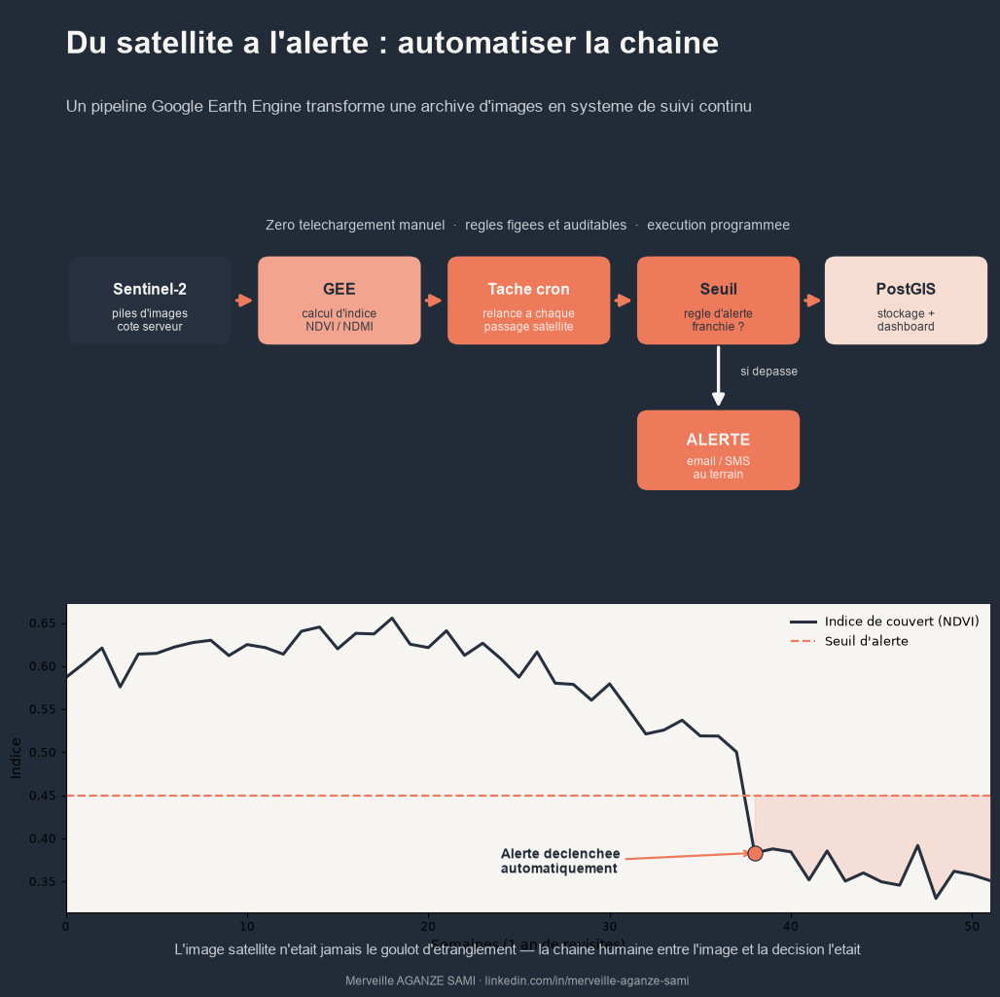

Le suivi environnemental des zones d'intervention repose fréquemment sur un exercice ponctuel : au moment de la rédaction d'un rapport, un analyste télécharge quelques images, calcule un indice et produit une carte. Entre deux exercices, les évolutions — perte de couvert forestier, retrait d'un plan d'eau, dégradation d'un bassin versant — ne sont pas observées.
Le facteur limitant n'est pourtant pas la disponibilité des données. Les archives Sentinel et Landsat sont ouvertes et alimentées en continu, avec des revisites de quelques jours ; l'ouverture des archives Landsat en 2008 a d'ailleurs constitué un tournant pour les analyses multi-temporelles (Woodcock et al., 2008). La contrainte réside dans la chaîne de traitement manuelle qui sépare l'image de la décision. L'automatisation de cette chaîne modifie la nature du dispositif : d'une archive consultée périodiquement, on passe à un système de détection continue.
1. Le principe du traitement côté serveur
Les plateformes de calcul géospatial infonuagique, dont Google Earth Engine est la plus documentée, reposent sur une inversion de la logique habituelle : au lieu de rapatrier les images vers la machine de l'analyste, le calcul est exécuté sur l'infrastructure qui héberge les archives (Gorelick et al., 2017). Seuls les résultats agrégés — statistiques zonales, séries temporelles, cartes finales — transitent par le réseau.
Cette architecture supprime les deux goulots d'étranglement classiques en contexte de connectivité limitée : le volume de téléchargement et la puissance de calcul locale. Elle rend accessibles des analyses multi-temporelles sur de longues séries qui seraient difficilement réalisables sur un poste de travail.
2. Architecture d'une chaîne programmée
Une chaîne opérationnelle s'organise en cinq composants.
- 1Définition du périmètre et du filtre. Emprises d'intervention, collection d'images, plage temporelle et critère de couverture nuageuse maximale sont fixés une fois pour toutes. Cette stabilité conditionne la comparabilité des mesures successives.
- 2Prétraitement et masquage. Application des masques de nuages et d'ombres à partir des bandes de qualité fournies avec les produits, puis harmonisation radiométrique lorsque plusieurs capteurs sont combinés.
- 3Calcul de l'indicateur. Indice spectral, statistique zonale ou détection de changement, selon l'objet du suivi. Le code de calcul est versionné : c'est lui qui garantit que la mesure de mars et celle de septembre sont commensurables.
- 4Export et persistance. Les résultats sont écrits dans une base de données — PostGIS pour les données spatiales — plutôt que conservés dans des fichiers dispersés. La base devient la source unique alimentant les restitutions.
- 5Restitution et alerte. Un tableau de bord expose les séries et les cartes ; une règle de seuil déclenche une notification lorsque l'indicateur franchit une valeur définie.
Sur la programmation des tâches. L'exécution périodique n'est pas assurée par la plateforme de calcul elle-même mais par un ordonnanceur externe — tâche planifiée, service d'automatisation ou orchestrateur de flux — qui appelle le traitement à intervalle régulier. Ce composant, souvent négligé à la conception, conditionne la régularité effective du suivi.
3. Concevoir des règles d'alerte exploitables
Un seuil appliqué à une valeur brute produit un nombre élevé de fausses alertes, la variabilité saisonnière et le bruit d'acquisition dépassant souvent l'ampleur du changement recherché. Trois précautions améliorent nettement le rapport signal sur bruit.
- Comparer chaque observation à une référence de même saison plutôt qu'à la date précédente, afin de neutraliser la phénologie. Les approches de détection continue exploitent l'ensemble des acquisitions disponibles pour modéliser cette saisonnalité avant d'identifier une rupture (Zhu & Woodcock, 2014).
- Exiger la confirmation sur plusieurs acquisitions successives avant de déclencher une alerte, principe retenu par les systèmes opérationnels de détection de perturbation forestière (Reiche et al., 2021).
- Définir une surface minimale de détection, en cohérence avec la résolution du capteur, pour écarter les variations à l'échelle du pixel isolé.
4. Contrôles qualité indispensables
- Nombre d'observations valides. Après masquage des nuages, une période peut ne contenir aucune image exploitable. Le pipeline doit consigner cette information, faute de quoi une absence de données est lue comme une absence de changement.
- Continuité des séries. Un changement de version des produits ou d'algorithme de masquage introduit des ruptures artificielles. Documenter la version des collections utilisées fait partie de la traçabilité.
- Validation terrain. Une alerte automatisée reste une hypothèse. Un protocole de vérification, même léger, doit être prévu dès la conception, et ses retours utilisés pour recalibrer les seuils.
- Journalisation. Enregistrer pour chaque exécution la date, les paramètres et le nombre d'observations traitées : sans ce journal, un résultat aberrant ne peut être diagnostiqué a posteriori.
5. Ce que l'automatisation apporte réellement
Le gain de fréquence est le plus visible : un suivi trimestriel devient hebdomadaire ou décadaire selon la revisite du capteur. Le gain méthodologique est plus important encore. Des règles de calcul figées et versionnées rendent les mesures successives comparables et la chaîne auditable — un tiers peut reproduire le résultat à partir du code et des paramètres.
Le déplacement de la charge de travail mérite enfin d'être anticipé. L'automatisation ne supprime pas le travail d'analyse ; elle le déplace de l'exécution répétitive vers la conception, la calibration des seuils et l'interprétation des alertes. Un pipeline sans personne pour instruire ses signaux produit des notifications que personne ne traite.
Points essentiels
- Le calcul côté serveur lève les contraintes de volume et de puissance locale
- Cinq composants : périmètre, prétraitement, calcul, persistance, restitution
- L'ordonnanceur externe conditionne la régularité effective du suivi
- Référence saisonnière, confirmation multi-dates et surface minimale réduisent les fausses alertes
- Consigner le nombre d'observations valides : une absence de données n'est pas une absence de changement
Références
- Gorelick, N., Hancher, M., Dixon, M., Ilyushchenko, S., Thau, D., & Moore, R. (2017). Google Earth Engine: Planetary-scale geospatial analysis for everyone. Remote Sensing of Environment, 202, 18–27. doi.org/10.1016/j.rse.2017.06.031
- Reiche, J., Mullissa, A., Slagter, B., Gou, Y., Tsendbazar, N.-E., Odongo-Braun, C., et al. (2021). Forest disturbance alerts for the Congo Basin using Sentinel-1. Environmental Research Letters, 16(2), 024005. doi.org/10.1088/1748-9326/abd0a8
- Woodcock, C. E., Allen, R., Anderson, M., Belward, A., Bindschadler, R., Cohen, W., et al. (2008). Free Access to Landsat Imagery. Science, 320(5879), 1011. doi.org/10.1126/science.320.5879.1011a
- Zhu, Z., & Woodcock, C. E. (2014). Continuous change detection and classification of land cover using all available Landsat data. Remote Sensing of Environment, 144, 152–171. doi.org/10.1016/j.rse.2014.01.011

Merveille Aganze Sami
Conseillère MEL & Gestion de Bases de Données. Plus de 9 ans d'expérience en suivi-évaluation, SIG et digitalisation auprès d'organisations internationales (GIZ, Enabel) en RD Congo.
Un suivi environnemental à automatiser ?
Prendre contact